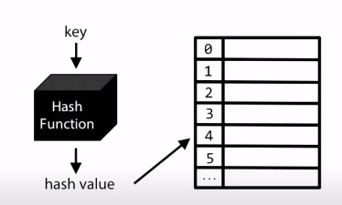
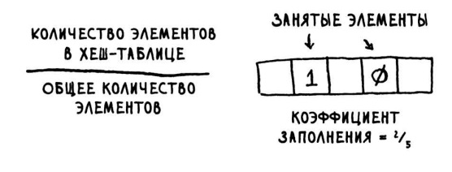

Что же это такое хеш-таблица?
Хеш-таблица это структура данных, реализующая интерфейс ассоциативного массива.
Представляет собой эффективную структуру данных для реализации словарей, а именно, она позволяет хранить пары (ключ, значение) и выполнять три операции: добавления новой пары, поиска и операцию удаления пары по ключу.
Рассмотрим преимущества и недостатки простейших структур данных
Массивы
const array = ['apple', 'orange', 'banana', 'grape'];
array[0]; // 'apple'
array[2]; // 'banana'
+ Произвольный доступ к элементам
- Фиксированный размер
- Массивы - произвольный доступ к элементам
- Связные списки - могут увеличиваться
Хеш-таблицы
используются, когда нужно быстро:
Где применяются хеш-таблицы?
Хеш-таблицы
не используются, когда нужно:
Сортировать данные
Хеш-функция
Отображает строки на числа

Коллизия
Методы разрешения коллизии:
- Открытая адресация
- Метод цепочек
И в итоге какой метод лучше?
На практике всё же второй метод предпочтительнее т.к. O(n/k) может иметь лучшую скорость выполнения
Ещё немного про быстродействие
Для предотвращения коллизий необходимы:
- Хорошая хеш-функция
- Низкий коэффициент заполнения
Требования к хеш-функции:
-
Должна быть последовательна. При одинаквых входных параметрах, должны быть одинаковые возвращаемые значения
-
Она должна использовать всю информацию о ключе, чтобы максимизировать количество возможных хеш-значений
-
Хеш-значения должны быть равномерно распрделены в таблице, это уменьшит длинну связных списков при коллизии
-
Хорошо будет если функция будет создавать различные хеш-значения для похожих ключей
Низкий коэффициент заполнения

Давайте напишем хеш-таблицу на JavaScript!
-
Хеш-таблицы обеспечивают быстрое выполнение поиска, вставки и удаления
-
Хеш-таблица создаётся объединением хеш-функции с массивом. И взяла всё лучше у массива и связного списка
-
Коллизии не желательны. Хеш-функция должна и свести количество коллизий к минимуму
-
Как только коэффициент заполнения превышает 0.7, пора изменять размер таблицы
-
Хеш-таблицы хорошо подходят для обноружения дубликатов, используются для кэширования данных